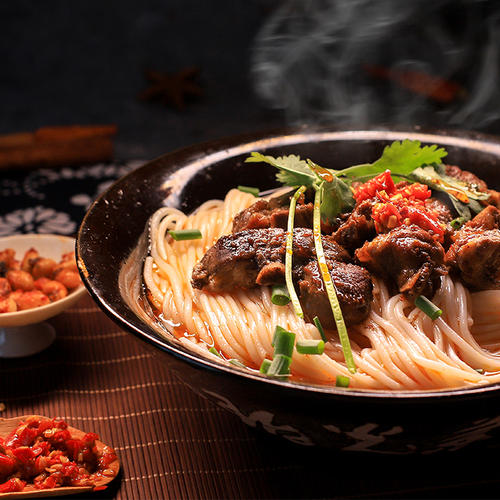
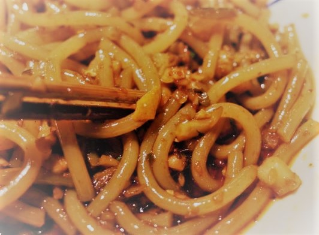

米
粉
篇
鹰潭牛肉粉
白色的圆而细的粉、肥硕的牛肉块和青菜铺在上面，十分诱人，汤也散发出浓郁的香味，味道一定很好！牛肉纹理清晰，味道非常浓郁，一口接着一口吃，非常好吃。

|
米 粉 篇 |
鹰潭牛肉粉 白色的圆而细的粉、肥硕的牛肉块和青菜铺在上面，十分诱人，汤也散发出浓郁的香味，味道一定很好！牛肉纹理清晰，味道非常浓郁，一口接着一口吃，非常好吃。 |
 |
|---|---|---|
|
|  | 景德镇冷粉 景德镇冷粉不同于一般的粉，它的粉条比较粗，大概半径有0.5厘米左右。其制作简单，风味独特，物美价廉，备受当地人的喜爱。 在景德镇人看来，做瓷器不过是养家之道，食冷粉才是生活之本。出趟远门，或者在外工作，亦或在外求学的本地人，返景以后，大多会一尝以饱口福。 |
|---|---|